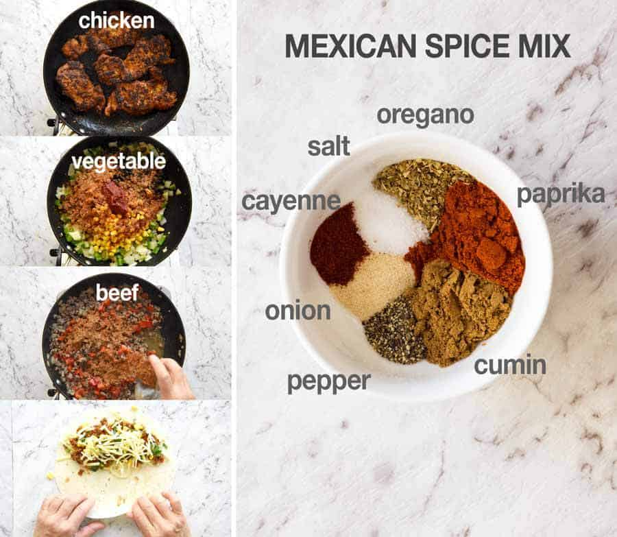
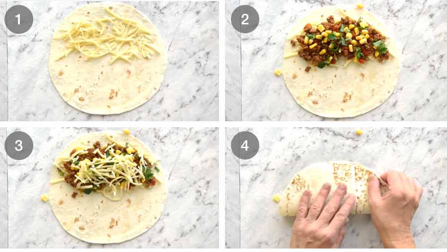
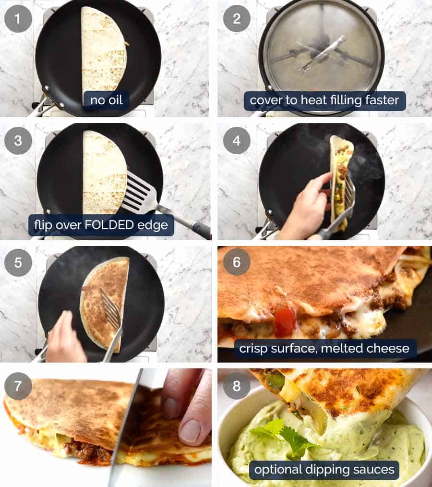

Chicken Quesadilla

Ingredients

- Seared seasoned chicken thigh fillets (or breast)
- 1 canned, pureed tomato sauce
- cooking oil
- 4x 6 inches flour tortillas
Preparation time
- Filling a quesadilla: 10 minutes
- Cooking a quesadilla: 10 minutes
Instructions
Filling a quesadilla:

-
To fill a quesadilla, place the filling on one side of a tortilla, then fold to enclose.
-
Start with shredded cheese, top with filling of choice (beef, chicken, vegetarian) then finish with another sprinkle of cheese.
Cooking a quesadilla

-
Place the quesadilla in a dry skillet over low to medium low heat.
-
Cover with a lid – this heats the filling through and melts the cheese faster, before the tortilla gets too brown
- Flip over the folded edge -this ensures you don’t lose any filling! Use your hand on the uncooked side to hold it together.
- Cook uncovered until crispy and cheese is molten – about 2 to 3 minutes.
- Cut in half and serve!